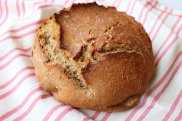

Whole Wheat Bread

Description
Prepare this recipe 12 hours in advance of baking! Bread is tasty, yum!
Ingredients
- 4 Cups of Whole Wheat Flour
- 2 Teaspoons Salt
- 3/4 Teaspoon Active Dry Yeast
- 2 Cups Water
Steps
- To begin, mix the dry ingredients together in a large bowl.
- add the water and stir until a smooth dough is formed.
- Let the dough rise overnight for 12-13 hours.
- Put your dutch oven+lid into you oven and preheat to 375
- Transfer the dough ball onto parchement paper and into the dutch oven
- Cook for 30 minutes with the lid then remove the lid and cook for an additional 15 minutes
- Remove from the oven and let it cool on a rack